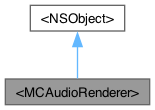

#import <renderer.h>
Inheritance diagram for <MCAudioRenderer>:

Collaboration diagram for <MCAudioRenderer>:

Instance Methods | |
| (void) | - didReceiveFrame: |
Detailed Description
This protocol can be implemented to receive audio frames from audio tracks. However, The recommended method to render audio is to use MCAudioPlaback instead. See MCAudioTrack/addRenderer: to attach an audio renderer.
Method Documentation
◆ didReceiveFrame:
| - (void) didReceiveFrame: | (MCAudioFrame *) | frame |
This handler is called when a new audio frame is available.
- Parameters:
- frame: A raw audio frame.
The documentation for this protocol was generated from the following file:
- objc/MillicastSDK/renderer.h